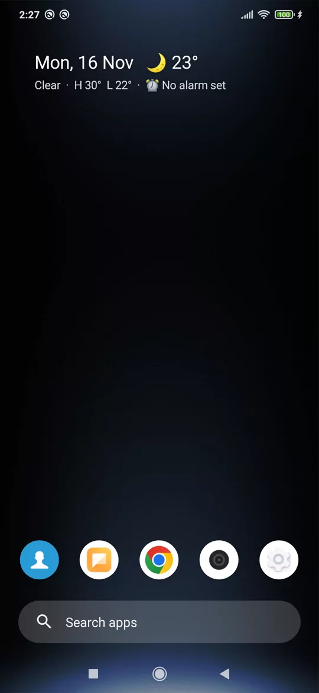
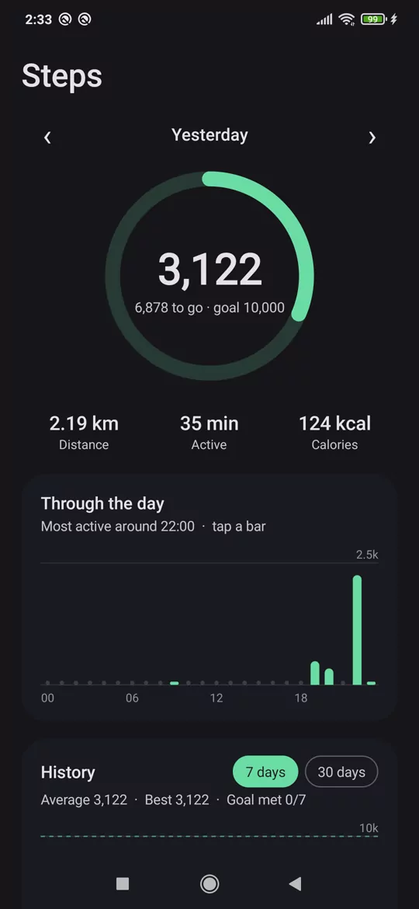

Plain Launcher
github.com/tanim913/plain_launcher
[LAUNCHER] [Android 8–16] for Redmi / MIUI
Ads gone.
Nothing lost.
Your steps, weather and real alarm stay.
PlainLauncher-0.2.0.apk
471 KB · Android 8.0 or newer · free, no account
v0.2.0
Open source
No ads, no tracking
No root

